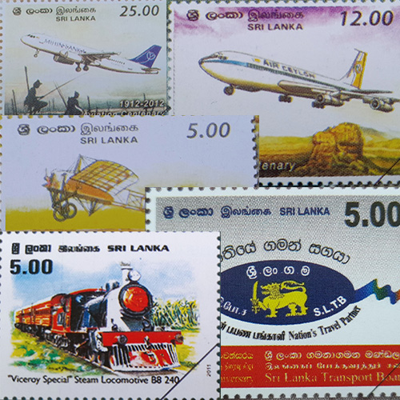
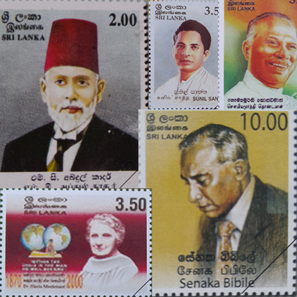
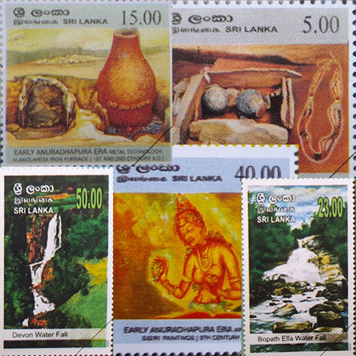
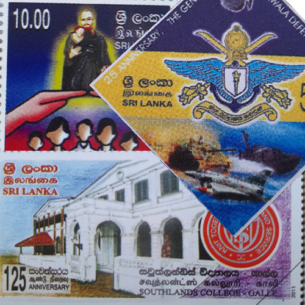
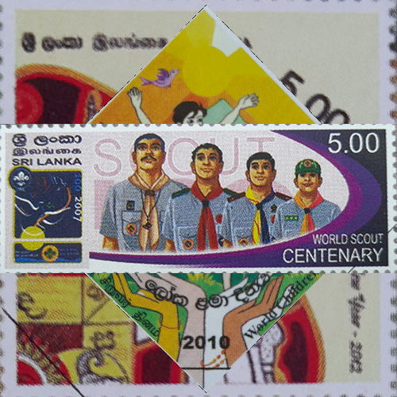

Stamps are miniature works of art that have been used for over a century to commemorate significant people, places, and events in history. Typically, a stamp features an image on one side and important details about the subject matter on the other, including the issuing country, denomination, and date of issue. Stamps are often collected for their historical, cultural, or artistic value and can be found in collections all over the world. Whether you're an avid collector or simply curious about the world of stamps, we're excited to share our collection with you.
We have divided our stamps into five categories for your convenience. Whether you're interested in
education, transportation, persons, places, or events, we have a stamp collection that's sure to fascinate
you. Simply click on each category to explore the unique and interesting designs we have on offer.
|  |  |  |
| Transportation | Persons | Places |
|  |  |
| Educational | Events |
Stamp collecting: A journey of discovery!